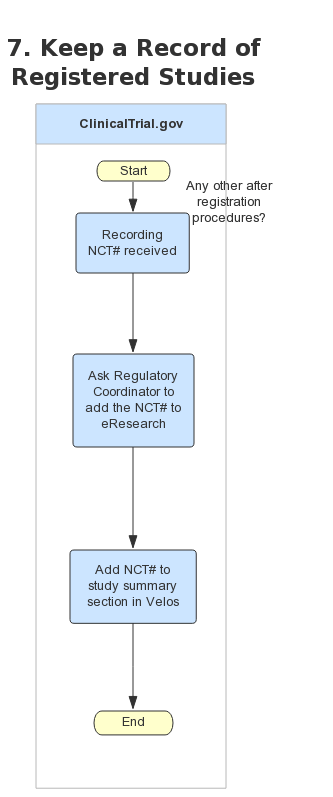

Study Registration Process
 1.1. Feasibility to find out if it will be handled by the CTO and eResearch to find out if it’s investigator initiated.
1.1. Feasibility to find out if it will be handled by the CTO and eResearch to find out if it’s investigator initiated.
2.2 The protocol is essentially the study manual and the application in eResearch contains a lot of the protocol information.
3.2. For studies need result, “results required” column is one year after the Primary completion date.
4.2. Mark in spreadsheet whether the study needs result to be filled in based on the study type according to the study name.
5.1. Input statistics of patient for base line measure: gender, age etc. from investigators’ report. Otherwise get information from Velos
6.1. PI will need to go into ClinicalTrial.gov to approve the registration, sometimes will come back to notify changes.
When a number is assigned I let the Regulatory Coordinator know and they add the NCT to eResearch and study summary section in Velos.

